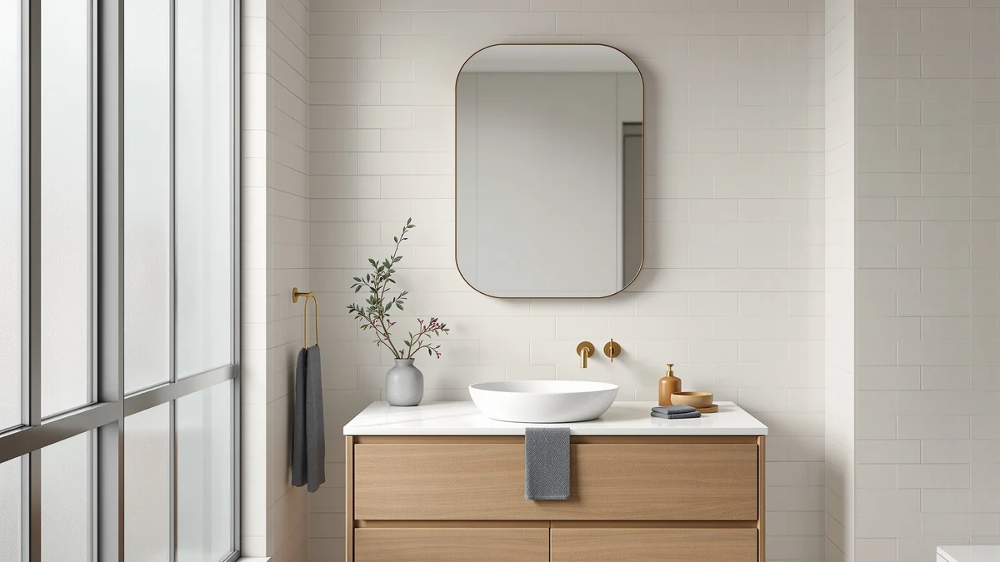

Best Bathroom Mirror With Shaver Socket of 2026: 7 Top Picks
Prices and picks verified as of August 2026. Independent, reader-supported reviews.


Quick Answer
The best bathroom mirror with shaver socket for most bathrooms is the Mepplzian Lighted Medicine Cabinet ($169.99 as of July 2026). It builds sockets and USB charging into a lighted 24 by 30 inch tempered glass cabinet, so your razor and toothbrush charge behind the mirror instead of on the counter.
Our pick: Mepplzian Lighted Medicine Cabinet with — $169.99 Check Price on Amazon
Bottom line: our top pick is the Mepplzian Lighted Medicine Cabinet with Mirror at $169.99. The best budget option is the Led Mirror for Bathroom at $60.79.
Things to Know Before You Buy
- Shaver socket means built-in power. On a bathroom mirror with a shaver socket, outlets or USB ports sit in the mirror or cabinet itself, so grooming tools charge at face level instead of across the room.
- Cabinets beat flat panels for this job. Six of our seven picks are medicine cabinets, and the enclosed shelf space hides the chargers and cords that a flat mirror leaves on the counter.
- Check your circuit first. US electrical code requires GFCI protection on bathroom receptacles, so confirm you have a protected outlet or circuit within reach of the mirror wall.
- Measure the wall, not the vanity. Our picks run from a slim 16 by 28 inch capsule to a 31.5 inch square, and sconces, trim, and door swings shrink the usable space fast.
- Expect to spend $120 to $300. As of July 2026 the range starts at the $119.99 Habison flat mirror and tops out at the $299.99 WisHomee; our $169.99 top pick sits near the middle.
The best bathroom mirror with shaver socket puts power where you groom, so your razor, trimmer, and toothbrush charge at face level instead of on a shelf across the room. We compared seven mirrors and medicine cabinets that build outlets and USB ports into the glass, and the Mepplzian Lighted Medicine Cabinet ($169.99 on Amazon as of July 2026) came out on top for most bathrooms. It pairs a lighted 24 by 30 inch tempered glass mirror with sockets and USB charging, at a price $130 below the most expensive cabinet in this guide.
A quick note on the name. Shaver socket is the British term for a power point built into bathroom fittings, and US shoppers use it too when they search for a mirror that can charge grooming tools. American catalogs list the same feature as built-in outlets or USB ports inside a medicine cabinet. The seven picks below all put power at the mirror, and six of them add enclosed storage, which keeps the cord clutter off your counter for good.
Your bathroom decides which one fits. The WisHomee black-framed cabinet suits a wide wall and a darker fixture palette at $299.99. Janboe covers three shapes, from a slim 16 by 28 inch capsule at $159.99 to a 20 by 32 inch oval at $249.99. Renters and small-bathroom owners should look at the Habison LED mirror, the lowest-priced pick here at $119.99. Below, we explain how we chose and compared, then walk through where each mirror wins and why we cut the rest.
Why You Should Trust Us
I'm Ilane Tall, and I research bathroom mirrors and medicine cabinets full time for this site. Best Bathroom Mirrors carries more than twenty buying guides in the category, including our roundups of LED bathroom mirrors and medicine cabinets with storage, so I have compared spec sheets, installation manuals, and owner feedback for a long list of mirrors with shaver sockets and built-in power.
We keep the process clean. No brand pays for placement, and we accept no review units. The affiliate links on this page cost you nothing extra. When a cabinet has a flaw, you read about it in the same section as the praise, and each pick below carries a "Flaws but not dealbreakers" list for that reason.
How We Picked
We started with one hard requirement for a bathroom mirror with shaver socket duty: the product had to include usable power, outlets or USB ports or both, not a bare bulb fitting or a marketing render. From there we filtered on four criteria. Build: tempered glass with an aluminum body, because particleboard swells in bathroom humidity. Ratings: owner scores of 4 stars or better on Amazon. Size: at least one option for narrow walls and one for wide vanities. Price: a ceiling of $300, since past that point you enter custom-cabinetry territory.
That filter cut the field fast. Flat mirrors with no power path, cabinets without a safety listing, and models whose owner photos showed a pattern of arrival damage all went out. Seven made the cut, and each earns its slot for a different bathroom: the Mepplzian for most people, the WisHomee for large walls, three Janboe shapes for three layouts, the MIRROLIA modular for setups that will change, and the Habison for the smallest budgets.
How We Compared
We evaluate on documents and owner evidence, not in a pretend lab. For each finalist we read the full installation manual to check the mounting method, wiring type, and clearance requirements, then set the listed dimensions against standard US vanity widths to see where each mirror with a shaver socket fits and where it crowds the wall. We also compared the power features line by line: where the sockets sit and whether USB rides alongside. Then we read each manual for its circuit requirements.
Owner reviews did the endurance work for us. We read the one-star and three-star reviews first, hunting for repeat complaints: LED strips failing early, doors sagging, hinges loosening, glass arriving cracked. A product with a repeated structural complaint lost its slot. A product with complaints about slow shipping kept it, since a courier problem says little about the mirror on your wall.
Our Picks

Mepplzian Lighted Medicine Cabinet with
What we like
- Sockets and USB charging built into a lighted cabinet
- 24 by 30 inch tempered glass mirror suits most single vanities
- Aluminum body shrugs off bathroom humidity
Flaws but not dealbreakers
- Too narrow to anchor a wide double vanity on its own
- Mounting a cabinet this size takes two people
| Material | Tempered glass + aluminum |
| Size | 24x30-Sockets & USB |
The Mepplzian earns the top slot by covering the whole brief at a fair price. You get a 24 by 30 inch lighted mirror, tempered glass in an aluminum frame, and the feature this guide exists for: sockets and USB ports built into the cabinet, so shavers and toothbrushes charge behind the glass instead of hogging the counter outlet. At $169.99 as of July 2026 it costs $130 less than the WisHomee and $60 less than the closest Janboe, and at this size it gives up nothing that matters. Owners rate it 4 stars, in line with the rest of this list.
The compromises are the honest kind. At 24 inches wide it looks right over a single vanity and undersized over a 60 inch double, where the WisHomee below makes the better call. The assembled cabinet also carries real weight, so plan the installation with a second set of hands and anchor into studs rather than trusting drywall anchors alone. If your bathroom has one sink and one person shaving at it, this is the bathroom mirror with a shaver socket we would buy first.

Black Bathroom Mirror Medicine Cabinets
What we like
- 31.5 inch square face, the largest mirror in this guide
- Matte black frame matches black faucets and pulls
- Tempered glass and aluminum construction
Flaws but not dealbreakers
- At $299.99 it costs the most in this guide
- The square shape needs a tall, wide stretch of wall
| Material | Tempered glass + aluminum |
| Size | 31.5"L x 31.5"W |
The WisHomee is the pick for the wall where the Mepplzian looks lost. Its 31.5 by 31.5 inch face gives you roughly 38 percent more mirror area than our top pick, enough to serve a wide vanity or two people at once. The black aluminum frame does design work too: if your bathroom runs matte black faucets and cabinet hardware, this cabinet ties the room together in a way a bare-edged mirror cannot, and it holds the same 4-star owner rating as the rest of our picks.
Price is the obvious catch. At $299.99 as of July 2026 it sits at the top of our range, and you pay that premium for size and finish rather than extra function. Measure before you commit: a 31.5 inch square needs clearance from sconces, towel bars, and the ceiling line, and it dominates a small room. For a large bathroom that wants a statement piece with shaver socket convenience, the spend makes sense. For a standard 24 to 36 inch vanity, save the $130 and take our top pick.

Janboe LED Medicine Cabinet Bathroom
What we like
- 20 by 28 inch footprint fits between sconces and door trim
- LED face lights your jawline for a clean morning shave
- Same tempered glass and aluminum build as pricier picks
Flaws but not dealbreakers
- Costs $60 more than the larger Mepplzian
- 20 inch width limits what fits inside
| Material | Tempered glass + aluminum |
| Size | 20×28inch |
Janboe places three cabinets in this guide, and this rectangular LED model is the conventional one. The 20 by 28 inch footprint slips into walls where a 24 inch cabinet would crowd the light fixtures, and the lit face gives you shadow-free light for a morning shave or a close trim. Build quality matches the rest of the list: tempered glass, an aluminum body, and 4-star owner ratings across the board.
The math is the weak point. At $229.99 as of July 2026 you pay $60 more than the Mepplzian for four fewer inches of width, so this cabinet only wins when the wall forces the smaller size. If you have the space, buy the Mepplzian. If a window, sconce, or door swing pins you to 20 inches, this Janboe delivers the strongest mirror with shaver socket convenience at that width, and it beats the capsule model further down on mirror area.

Spliceable Modular LED Lighted Bathroom
What we like
- Spliceable design lets you add matching panels later
- LED lighting at $189.99, under both Janboe rectangles
- 20 by 28 inch base unit fits a standard vanity
Flaws but not dealbreakers
- The Habison below costs $70 less if you skip the modularity
- Adding a second panel leaves a visible joint line
| Material | Tempered glass + aluminum |
| Size | 20"×28" |
MIRROLIA solves a problem the fixed picks ignore: bathrooms change. The spliceable design lets you hang a 20 by 28 inch lighted unit today and add matching panels beside it when you widen the vanity or convert to a double sink. No other pick in this guide grows with the room. At $189.99 as of July 2026 it undercuts both Janboe rectangles while keeping the tempered glass and aluminum construction that runs through this list.
Two caveats keep it out of the top slot. Modularity brings seams, and once you splice a second panel on, you will notice the joint line from a foot away. The budget label also deserves context: the Habison flat mirror below costs $70 less, so this is the budget route to an expandable lighted setup, not the cheapest mirror on the page. Buy the MIRROLIA if you expect the bathroom layout to change; buy the Habison if the lowest price wins.

Janboe Oval Medicine Cabinet with
What we like
- Oval face softens a room full of straight lines
- 20 by 32 inches runs taller than the rectangular picks
- Tempered glass with an aluminum body
Flaws but not dealbreakers
- Curved corners trim away usable mirror edge
- $249.99 buys shape, not extra function
| Material | Tempered glass + aluminum |
| Size | 20inch×32inch |
The oval Janboe is the style pick. Bathroom design has moved toward curves over the past few years, with rounded basins, arched alcoves, and pill-shaped hardware, and a rectangular cabinet can read like a filing box in that context. This one gives you a 20 by 32 inch oval face, taller than any rectangle in the guide, so a six-footer and a child both find their reflection without crouching or tiptoeing.
You pay for the shape. At $249.99 as of July 2026 it costs $80 more than our top pick without adding function, and the curved corners give up mirror surface at the edges where a rectangle keeps it. Skip it if your bathroom leans traditional or your budget stops at $200. Choose it when the room already commits to curves and you want a mirror with shaver socket convenience that looks intentional rather than bolted on.

Janboe Capsule Shape Medicine Cabinet
What we like
- 16 inch width fits walls no other pick can use
- $159.99, the least expensive cabinet in the guide
- Capsule shape reads modern without going full oval
Flaws but not dealbreakers
- Interior space suits one person, not a household
- 16 inches of mirror feels tight for two-handed grooming
| Material | Tempered glass + aluminum |
| Size | 16×28inch |
The capsule Janboe exists for the wall the other six cannot fit. At 16 by 28 inches it slots between a door casing and a corner, above a pedestal-style basin, or in a half bath where a 24 inch cabinet would overwhelm the room. It also carries the lowest cabinet price here at $159.99 as of July 2026, ten dollars under our top pick, which makes it the default choice when space and budget shrink together.
Accept the size before you order. A 16 inch mirror shows your face and not much else, so anyone who grooms with elbows out will feel cramped, and the interior holds one person's essentials rather than a family's. Owners rate it 4 stars, matching its larger siblings, and the tempered glass and aluminum build carries over unchanged. For a narrow wall that needs bathroom mirror with shaver socket convenience, this is the one to shortlist.

Led Mirror for Bathroom 24x32
What we like
- $119.99 undercuts the rest of the guide by $40 or more
- 24 by 32 inches of lit glass, more area than our top pick
- No cabinet box, so it hangs on walls with shallow framing
Flaws but not dealbreakers
- No storage, so chargers and cords stay on the counter
- Lacks the furniture presence of the cabinet picks
| Material | Tempered glass + aluminum |
| Size | 32"L x 24"W |
The Habison strips the category to its essentials: a 24 by 32 inch LED mirror in tempered glass and aluminum at $119.99 as of July 2026, the lowest price in this guide by $40. You lose the cabinet, and on some walls that counts as a feature. Old houses with shallow stud bays, tiled surfaces you cannot cut into, and rentals where a recessed cabinet is off the table all take a flat mirror without drama.
Living without storage is the trade. Your trimmer, its cord, and the toothbrush charger stay on the counter, which is the clutter the cabinet picks above eliminate. If that bothers you, the Janboe capsule adds enclosed storage for $40 more. If it does not, the Habison gets you a lit 24 by 32 inch mirror for the least money on this page, and your shaver socket needs can ride on the vanity outlet below it.
Quick Comparison
| Product | Material | Price | Rating | Best for | Get it |
|---|---|---|---|---|---|
| Mepplzian Lighted Medicine Cabinet with | Tempered glass + aluminum | $169.99 | 4 | Most bathrooms; shaver socket + USB | View on Amazon → |
| Black Bathroom Mirror Medicine Cabinets | Tempered glass + aluminum | $299.99 | 4 | Wide walls, black fixtures | View on Amazon → |
| Janboe LED Medicine Cabinet Bathroom | Tempered glass + aluminum | $229.99 | 4 | Narrow standard vanities | View on Amazon → |
| Spliceable Modular LED Lighted Bathroom | Tempered glass + aluminum | $189.99 | 4 | Expandable, changing layouts | View on Amazon → |
| Janboe Oval Medicine Cabinet with | Tempered glass + aluminum | $249.99 | 4 | Curved, modern rooms | View on Amazon → |
| Janboe Capsule Shape Medicine Cabinet | Tempered glass + aluminum | $159.99 | 4 | Tight walls, half baths | View on Amazon → |
| Led Mirror for Bathroom 24x32 | Tempered glass + aluminum | $119.99 | 4 | Lowest price, no cabinet | View on Amazon → |
What is a shaver socket on a bathroom mirror?
Shaver socket is the British term for a power point built into a bathroom fitting.
Can I install a mirror with a shaver socket myself?
You can mount the cabinet yourself with a stud finder, a level, and a second person to hold the weight.
The Competition
After lining them all up, our verdict holds: the best bathroom mirror with shaver socket for most people is the Mepplzian Lighted Medicine Cabinet. It pairs built-in sockets and USB charging with a lighted 24 by 30 inch tempered glass mirror at $169.99, and its trade-offs concern size, not quality.